Acordei e fui para o café da manhã do Hotel Parque da Lagoa em Tavares/RS. Bem servido, com frutas, bolos, uns pães, e uns frios. Antes de voltar ao quarto passei na recepção para pagar a estadia.
Não era mais a recepcionista do dia anterior quem estava lá, e sim um rapaz que tive a impressão ser o dono do local. Ele perguntou quanto ela tinha me cobrado no quarto, se teria sido 70 reais. Eu disse que o preço estava melhor então, pois ela tinha me cobrado 80. Ele ficou um pouco sem graça, e disse que faria meio a meio então, por 75 reais. Já eu, não achei tão engraçado essa história de variar o preço conforme a cara do cliente. Parece coisa de camelô. Mas, fazer o quê. Paguei os 75 reais e fui arrumar as bagagens.
Moto pronta, tudo em cima. Parei pra abastecer lá em Taraves mesmo (4.870 Km rodados), saí da cidade para a BR-101, e acelerei pelos pouco mais de 150 Km até Capivari do Sul. Passando por Mostardas, vi que a dica do veterinário, com quem conversei no barco vindo de Rio Grande, procedia. Muitos buracos, os caminhões desviando de um lado para o outro na rodovia, pela contramão. À noite é perigoso mesmo.
[caption id="attachment_693" align="aligncenter" width="500"]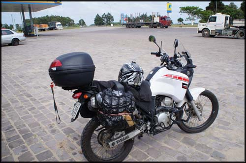 Pausa para descansar. Os fortes ventos detonam.[/caption]
De novo, ventos fortes. Na verdade, neste dia estavam mais fortes ainda. Teve momentos em que rodei a 30km/h para evitar quedas em meio aos buracos, com o vento deslocando a moto para os lados.
[caption id="attachment_694" align="aligncenter" width="600"]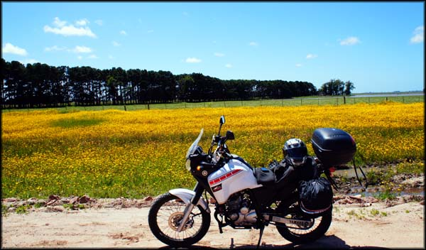 Nas áreas descampadas o vento era o maior inimigo[/caption]
Funcionava assim: quando as laterais da estrada eram aquelas planícies intermináveis, o vento dava cada porrada que a pequena Ténéré chegava a perder atrito com o asfalto; quando havia alguma vegetação lateral mais alta, fazia uma parede de isolamento do vento, que me deixava esticar mais a velocidade. E foi assim por todo esse trecho. Pena que 80% dele era de planície, então a média de velocidade deve ter ficado lá pelos 40km/h. Extremamente cansativo.
Cheguei já exausto em Capivari do Sul. Tinha pilotado por apenas 150 quilômetros, mas o ambiente com aquela ventania, apesar de um sol bonito se mostrar presente, estava tão inóspito que me senti como se tivesse pilotado por um dia inteiro.
[caption id="attachment_695" align="aligncenter" width="600"]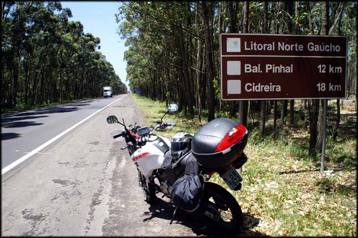 Seguindo, rumo ao Litoral Norte Gaúcho depois de abastecer[/caption]
Lá abasteci de novo (Km 5.016 Km rodados), e comentei com o frentista sobre os fortes ventos. Ele disse que normalmente não é assim, mas que aquele vento fortíssimo tinha começado naquele dia mesmo, do nada. Putz, então está me seguindo desde que voltei ao Brasil até aqui. E hoje está com mais raiva de mim. Aproveitei para confirmar se dali, pegando a RS-040 em direção ao litoral, passaria mesmo pelo tal Túnel Verde. Ele disse que sim. Parti.
Quando peguei a RS-040 achei que, por seguir em outra direção, o vento daria uma trégua. Ledo engano. Tive que continuar naquele ritmo de 40km/h. Obras na pista, operários fechando a via no sistema de anda e para, uma vez para cada mão. Finalmente, depois de rodar um pouco, passei pelo trecho chamado de Túnel Verde.
[caption id="attachment_701" align="aligncenter" width="600"]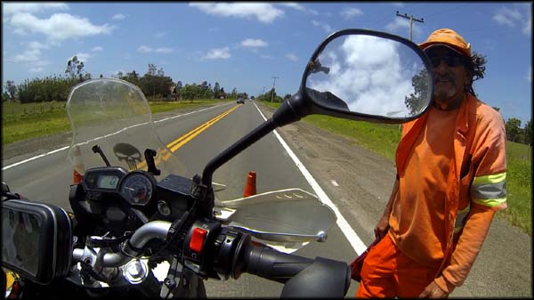 Esperando para poder seguir, obras na pista. Funcionário curioso com a moto[/caption]
Túnel Verde
O Túnel Verde é um pedaço da estrada de cerca de 3 Km, onde diziam ter grandes eucaliptos plantados às margens da rodovia, e que acabaram se entrelaçando, e formando um túnel, literalmente, fechado pela vegetação das copas daquelas árvores. Eu imaginava algo bem mais maneiro do que realmente vi.[caption id="attachment_696" align="aligncenter" width="600"]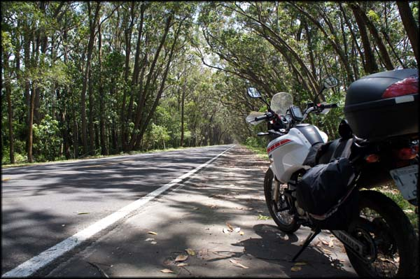 Túnel Verde, em Capivari do Sul[/caption]
Não sei se pela época do ano, mas a vegetação não estava tão densamente fechada, e as cores das folhagens não estavam tão vivas como nas plantações que eu vira à beira da estrada… enfim, não foi a cena que eu imaginava. Mas não deixava de ser legal.
Parei a moto no acostamento, observei um pouco, tirei uma foto, e voltei os vinte e poucos quilômetros que eu havia rodado naquela direção. Agora, porém, com o vento a favor, o que deixou a pilotagem bem mais fácil e rápida.
Voltei então à BR-101, e segui em direção a Osório. De novo, o vento avacalhando o passeio, velocidades baixíssimas, muito esforço para manter a moto em pé. Passei por enormes estruturas do parque eólico de lá, um visual bem bacana. Parei a moto no acostamento para tentar tirar uma foto, mas foi impossível, sempre que eu tentava pegar a câmera e largava a moto no descanso, o vento começava a tentar derrubá-la, não havia posição em que eu a colocasse, aquele redemoinho tentava derrubá-la moto e eu tinha que ficar segurando. Desisti da foto e segui.
Continuei por mais alguns minutos, passando ao longo do parque, e vi uma entrada para a RS-389, onde finalmente achei um ponto no qual grandes pinheiros faziam uma barreira contra o vento, e pude enfim tirar a foto que eu pretendia, do equipamento de geração de energia.
[caption id="attachment_697" align="aligncenter" width="300"]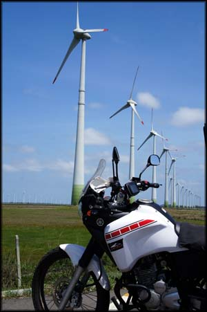 Em Osório, o vento é utilizado de forma inteligente. Energia ecologicamente correta.[/caption]
Me dei por satisfeito, e voltei para a BR-101. De lá eu tinha visto no mapa que era pra pegar a 290 e depois a 101 subindo. Só que eu me enrolei com a sinalização - pra variar confusa - e no viaduto, em meio ao vendaval e tenso por causa de carros que passavam em alta velocidade, peguei sentido Porto Alegre. Mal sabia o tamanho do problema em que eu me metera.
A pista agora era uma "freeway", maldita, sem retorno. Quer dizer, lugar pra retornar tinha, mas com placa de proibição. A viagem toda eu não havia feito uma ilegalidade, uma bandalha sequer, e até então não tinha tido problemas com fiscalização e polícia. Decidi me manter assim, pensando que uma hora eu chegaria em um ponto onde poderia retornar.
[caption id="attachment_703" align="aligncenter" width="500"]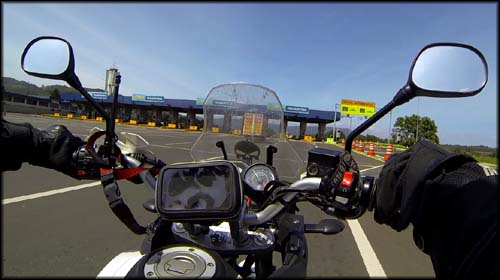 Praça de pedágio da "freeway". Paguei ida e volta à toa...[/caption]
Bobagem, rodei por um bom tempo, tive que pagar R$ 4,65 de pedágio, rodar mais um pouco, até que enfim alguma alma iluminada construiu um retorno; daí voltei tudo, paguei de novo o pedágio, e segui subindo para o sudeste. Tudo isso com uma pilotagem sofrida, com ventos fortes novamente, baixas velocidades, carros de passeio e caminhões sem paciência querendo me atropelar na faixa da direita, sendo que haviam mais três outras faixas para eles circularem. Nesse momento foi que eu decidi que a viagem tinha acabado mesmo, e eu só queria sair dali e chegar em casa. Comecei a ficar com raiva.
Segui pela 101, e em certa altura a paisagem ao redor da estrada melhorou, começando uma região de pequenos morros, e curvas. Ah, que saudades eu estava de fazer curvas. Os pneus da moto já estavam quadrados, só andando em linha reta, gastando só no meio.
[caption id="attachment_704" align="aligncenter" width="600"]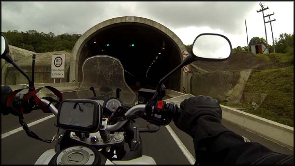 Há dias não passava por túneis. Só planícies e mais planícies.[/caption]
Daí em diante consegui manter o ritmo de estrada, média de 110Km/h, o limite da via. Cheguei em Três Cachoeiras às 16:00, abasteci (5.188 Km rodados). Resolvi que não iria almoçar mesmo, segui mais, saí do Rio Grande do Sul, passei para Santa Catarina. Passei de novo por Tubarão, e olha que deu vontade de subir novamente para a Serra do Rio do Rastro e tentar mais uma vez ver as paisagens. Me contive.
Cheguei na parte da pista que estava em obras - onde eu perdi o maior tempão em engarrafamento na ida - e depois de alguns minutos de novo preso ali, no meio de caminhões e carros, joguei pelo acostamento de barro e fui ultrapassando. Um longo trecho de tráfego parado depois, consegui voltar à estrada boa.
Pilotei até a altura de Laguna, onde novamente abasteci (5.381 Km rodados). Já começava a escurecer. Fui em uma loja de conveniência do posto, bebi um café. Apesar de nada ter comido durante o dia, não sentia mais fome, e estava com disposição para continuar rodando. Mas para isso iria desrespeitar o limite de segurança que eu próprio estabeleci para mim: não rodar durante a noite.
Combinei comigo mesmo - acho que já estava ficando doido - que iria voltar sim à estrada, e quando ficasse noite mesmo, eu continuaria rodando, mas de olho em placas de hospedagem, e pararia na primeira que visse. Era um acordo justo.
[caption id="attachment_705" align="aligncenter" width="600"]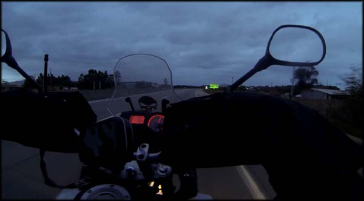 Pilotar à noite não estava nos planos, mas passou a acontecer[/caption]
E assim o fiz, fui rodando, escureceu, continuei rodando e de olho nas placas. Mas, para a sorte da minha personalidade que estava prezando pela segurança ao invés da pressa, logo vi uma placa de hospedaria em um posto de gasolina, na entrada da cidade de Imbituba, em Santa Catarina.
Entrei na cidadela, um pouco depois vi o posto Vila Nova. Parei, perguntei o preço: R$ 40,00. Pedi para ver o quarto, achei bom e fiquei.
[caption id="attachment_698" align="aligncenter" width="600"]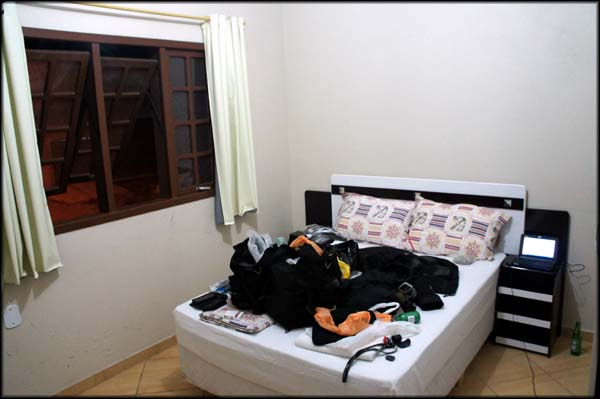 Quarto do "hotel" no Posto Vila Nova. Suficiente pra descansar. Na cama as bagagens, rs[/caption]
Depois de descarregar a moto, desci e comi um cachorro-quente no trailler que havia em frente ao posto (R$ 4,50), o qual serviu como almoço e janta. Bebi três longnecks de Heineken na conveniência do posto (R$ 13,50).
[caption id="attachment_699" align="aligncenter" width="600"]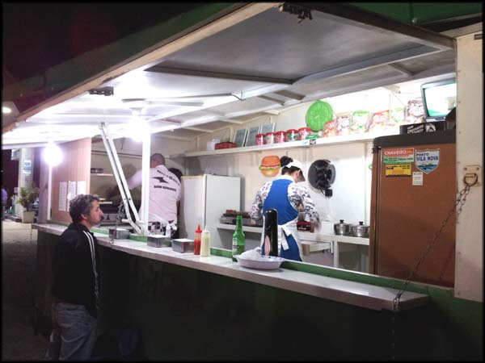 Casal simpático atende no trailler ao lado do posto[/caption]
Fiquei uns minutos conversando com o simpático casal que trabalha com o trailler. O rapaz disse que tinha uma motinha, mas que nunca pensou em ir muito longe com ela porque tem só 150cc. Eu argumentei que era besteira, que a moto leva pra qualquer lugar, basta querer. Gente boa.
Após umas cervejas e o bom papo, subi para o quarto e apaguei. No dia seguinte queria rodar o máximo que conseguisse. Se pudesse só parava no Rio de Janeiro…
---------- Comentários são bem vindos, inclusive dúvidas que eu saiba responder. Por questão de organização, comentários sobre a viagem ao Uruguai estarão concentrados no primeiro artigo que pode ser acessado aqui: Viagem de Moto do Rio ao Uruguai. Obrigado pela visita!